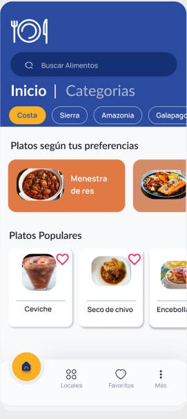

Gastronomía
En CulinaryShare te conectamos con lo mejor de la gastronomía local. Nuestro objetivo es promover los sabores tradicionales de cada región,
facilitando el acceso a recetas auténticas y restaurantes que las preparan con pasión.
- Recetas paso a paso: aprende a cocinar platos típicos como la menestra de res, el seco de chivo y el ceviche.
- Mapa gastronómico: encuentra restaurantes cercanos donde se sirven tus platos favoritos, con geolocalización en tiempo real.
- Filtros personalizados: elige por tipo de comida, región o preferencia (vegana, sin gluten, tradicional, etc.).
- Platos populares: descubre cuáles son los platos más votados por la comunidad y explora nuevas recetas recomendadas.
